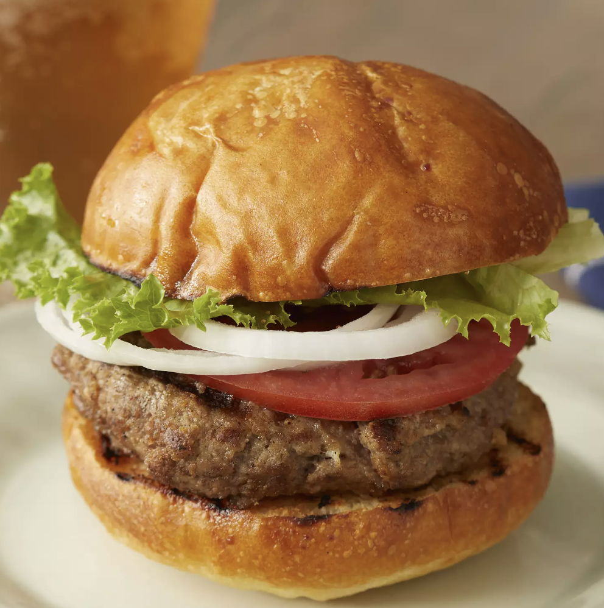

Basic Burger

Description
Learn how to make a burger from scratch.
Ingredients
- 1 large egg
- 1/2 teaspoon salt
- 1/2 teaspoon pepper
- 1 pound ground beef
- 1/2 cup fine dry bread crumbs
Steps
- Preheat grill to high heat.
- Whisk together egg, salt, and pepper. Add ground beef and bread crumbs. Mix with hands until blended, then form patties.
- Place patties on grill. Cook to desired temperature.